Functions/Subroutines | |
| subroutine | test_map_type_put |
| subroutine | test_map_type_put_unique |
| subroutine | test_map_type_pointers |
| subroutine | test_map_type_get |
| subroutine | test_map_type_remove |
| character(len=15) function | str (k) |
| subroutine | test_stack_type_pointers |
| subroutine | test_stack_type_push_pop |
| subroutine | test_queue_type_pointers |
| subroutine | test_queue_type_push_pop |
| subroutine | test_list_type_add |
| subroutine | test_list_type_pointers |
| subroutine | test_list_type_get |
| subroutine | test_list_type_insert |
| subroutine | test_list_type_remove |
| subroutine | init_random_seed () |
Function/Subroutine Documentation
◆ init_random_seed()
| subroutine test_collections_mod::init_random_seed |
Definition at line 402 of file test_collections.F90.
Here is the caller graph for this function:
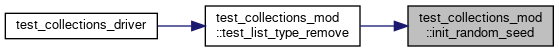
◆ str()
| character(len=15) function test_collections_mod::str | ( | integer, intent(in) | k | ) |

◆ test_list_type_add()
| subroutine test_collections_mod::test_list_type_add |
Definition at line 263 of file test_collections.F90.
Here is the caller graph for this function:
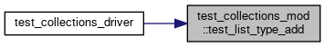
◆ test_list_type_get()
| subroutine test_collections_mod::test_list_type_get |
Definition at line 302 of file test_collections.F90.
Here is the caller graph for this function:
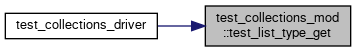
◆ test_list_type_insert()
| subroutine test_collections_mod::test_list_type_insert |
Definition at line 329 of file test_collections.F90.
345 call assert_equals(20, c_size(my_list), "Post addition and insertion list_type size is correct")
Here is the caller graph for this function:
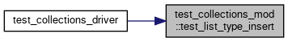
◆ test_list_type_pointers()
| subroutine test_collections_mod::test_list_type_pointers |
◆ test_list_type_remove()
| subroutine test_collections_mod::test_list_type_remove |
Definition at line 362 of file test_collections.F90.
Here is the call graph for this function:
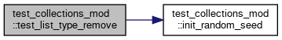
Here is the caller graph for this function:
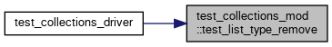
◆ test_map_type_get()
| subroutine test_collections_mod::test_map_type_get |
Definition at line 80 of file test_collections.F90.
Here is the call graph for this function:
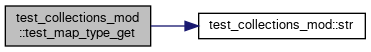
Here is the caller graph for this function:
◆ test_map_type_pointers()
| subroutine test_collections_mod::test_map_type_pointers |
Definition at line 59 of file test_collections.F90.
Here is the caller graph for this function:

◆ test_map_type_put()
| subroutine test_collections_mod::test_map_type_put |
Definition at line 11 of file test_collections.F90.
Here is the call graph for this function:
Here is the caller graph for this function:
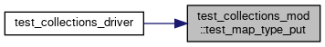
◆ test_map_type_put_unique()
| subroutine test_collections_mod::test_map_type_put_unique |
◆ test_map_type_remove()
| subroutine test_collections_mod::test_map_type_remove |
Definition at line 126 of file test_collections.F90.
Here is the call graph for this function:
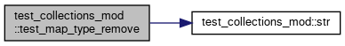
Here is the caller graph for this function:
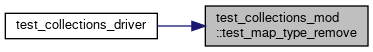
◆ test_queue_type_pointers()
| subroutine test_collections_mod::test_queue_type_pointers |
Definition at line 213 of file test_collections.F90.
Here is the caller graph for this function:
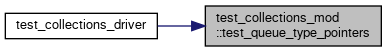
◆ test_queue_type_push_pop()
| subroutine test_collections_mod::test_queue_type_push_pop |
Definition at line 233 of file test_collections.F90.
Here is the caller graph for this function:
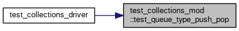
◆ test_stack_type_pointers()
| subroutine test_collections_mod::test_stack_type_pointers |
◆ test_stack_type_push_pop()
| subroutine test_collections_mod::test_stack_type_push_pop |
Definition at line 184 of file test_collections.F90.
Here is the caller graph for this function:
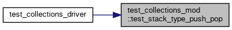